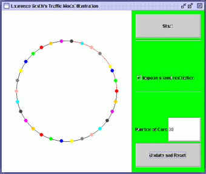
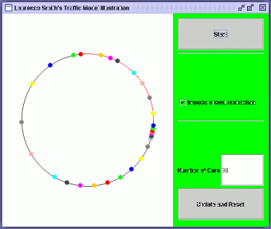
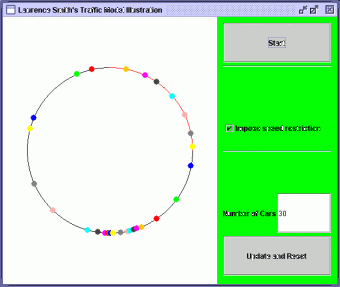

|
|
| Car Traffic Modelling |
| Have you ever wondered why you get stuck in a traffic jam which has no apparent cause?
I have created a simple model which shows why this occcurs. |
| In my model, cars travel in an anticlockwise direction around a long loop. Initially the cars travel round the loop at a uniform
speed limit and there are no traffic jams. |
| We then introduce a speed restriction on part of the loop. Figure 1 shows the position of the cars (represented by
coloured circles) just as the speed limit is introduced. |

Figure 1 |
| Each car operates independently but according to a set of common rules. A car first considers its safety gap. If there are no other cars within the safety gap
the car accelerates until it reaches the speed limit, and then remains at this speed. If another car is in its safety gap the car brakes
- with increasing severity according to the distance between the cars - so that the cars do not crash. |
| As the first car reaches the newly imposed speed limit, it brakes to slow down to the new speed limit.
The car behind (which is still travelling at the faster speed) then finds the first car within its safety gap. This car then
brakes, which leads to the car behind it finding it within its safety gap. This process continues creating a traffic jam
at the start of the speed restriction - as seen in Figure 2. |

Figure 2 |
| As cars run reach the back of the traffic jam they brake and become part of the jam. However,
the car at the start of the jam has no cars in front of it and so accelerates to the speed limit.
The car behind it can then also accelerate. Thus cars escape from the front of the traffic jam. |
| Because cars in the traffic jam leave a gap between themselves, this leads to the traffic jam
moving clockwise around the loop. After a period of time we reach the position in Figure 3. |

Figure 3 |
| You can download the traffic model and see what happens for yourself. You can try running it with
and without the speed restriction and try different numbers of cars. If there is enough space between the cars a traffic jam does not form. |
| If you can't get it to work, you probably haven't got Sun's Java Runtime Environment.
Download it from www.java.com. |
| Page Created: 6 December 2004 |